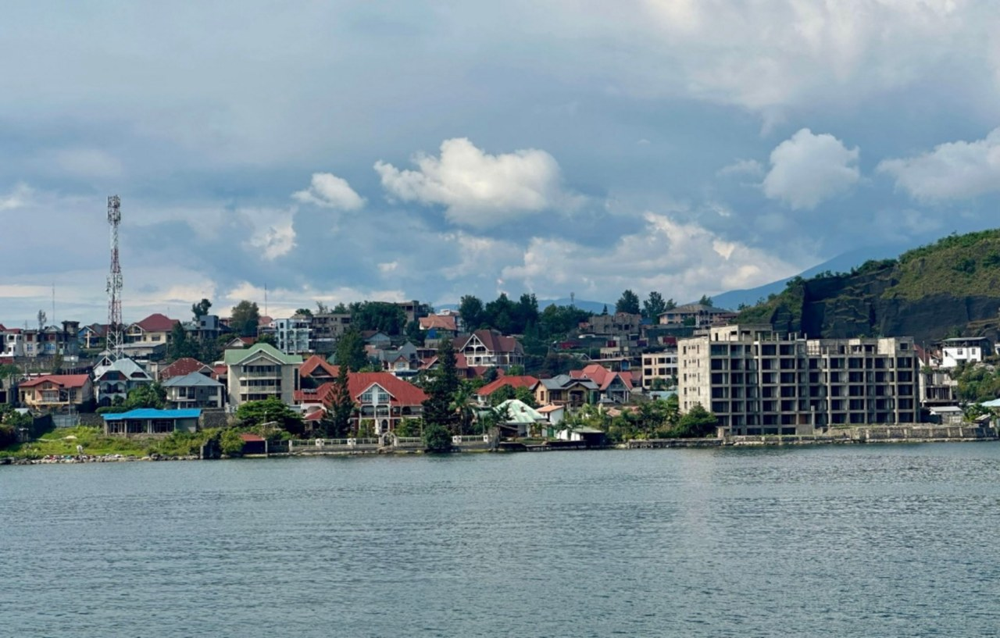

La ville de Goma, au bord du lac Kivu, RD Congo. Photo : Fiston bamela, CC BY 4.0, via Wikimedia Commons
31 octobre 2026
La faim au Congo est-elle une crise alimentaire, ou une crise d'accès, de protection et de confiance ?
28,8 millions de personnes font face à une insécurité alimentaire aiguë élevée jusqu'en décembre. Les moteurs sont le conflit, le déplacement et l'accès bloqué, et la réponse passe par des moyens de subsistance partagés, pas par le seul tonnage.
Lire l'analyse →